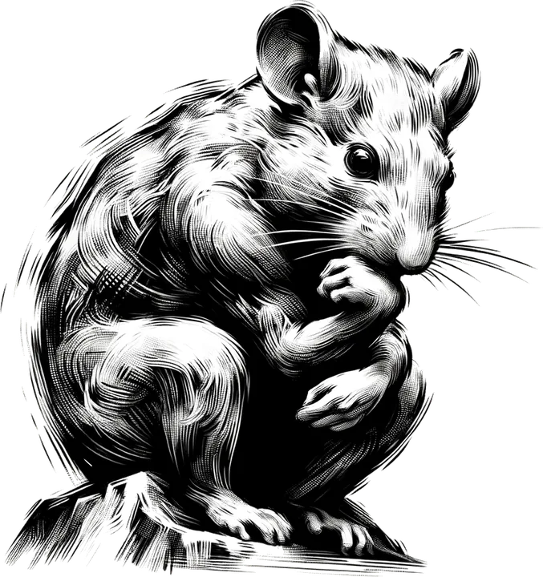

Dries H. Bostyn
Moral psychologist · Ghent University
I am a moral psychologist, statistician and philosopher, currently a postdoctoral assistant at Ghent University. My primary research focus is the study of moral psychology.

Research
I study how people make moral decisions, with a particular interest in:
- Real-life moral dilemmas. How do choices in hypothetical trolley-style dilemmas compare to what people do when their decisions have real consequences?
- Sequences of moral decisions. Moral choices are not independent: people try to spread harm fairly across repeated decisions.
- Blame and praise. How statistical and prescriptive norms shape whom we blame and whom we praise.
Open science. I am a big proponent of transparency in science and aim to make my research and data as accessible as possible. Data, materials and statistical code for my first-authored papers are linked on the Publications page.
If you have any questions or comments, do not hesitate to reach out.